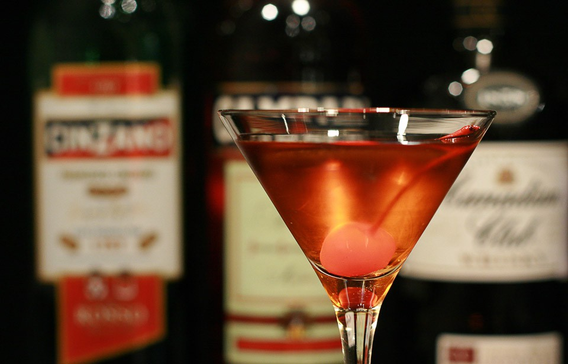

Manhattan

Ain't no prohibition for this Manhattan melody – shaken, not stirred in
glamour's symphony.
In "Some Like It Hot," the Manhattan cocktail embodies the sophistication
of the 1920s in this classic comedy. Made with whiskey, sweet vermouth,
and bitters, the cocktail complements the glamorous setting and witty
banter between characters. Marilyn Monroe's character, Sugar Kane, adds to
the allure, embodying the charm and sophistication of the era.
Ingredients
- whisky (bourbon, whiskey) 4 cl
- vermouth red 2 cl
- angostura bitters 5 drops
Steps
- Make the "Manhattan" recipe in a mixing glass.
-
Pour the ingredients into a mixing glass with ice cubes and shake
vigorously with a mixing spoon. Strain into the chilled glass, retaining
the ice cubes.
- Serve in a martini glass.
- A cherry at the bottom of the glass.